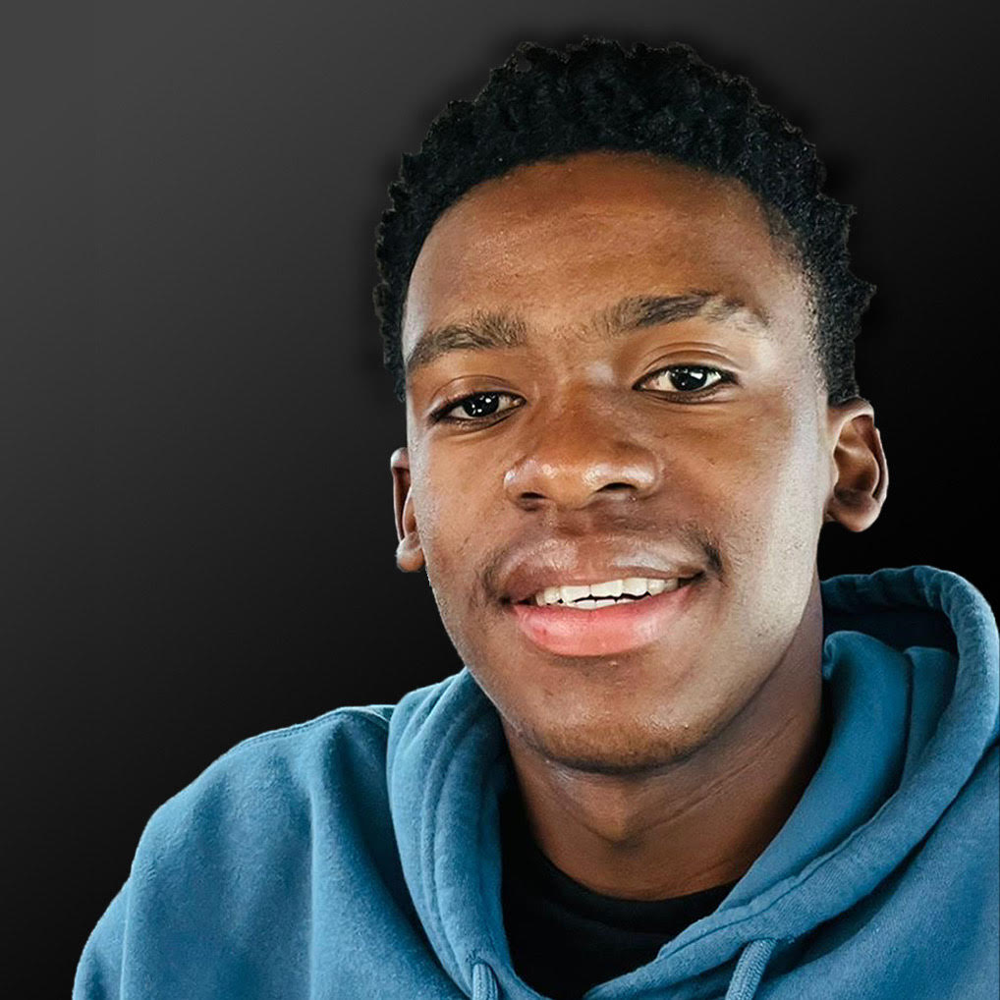

This is all about me, Matalame Mamabolo. Prefarably known as 'Mata'. I am currently a third year, studying Digital Arts at the University Of Witwatersrand and majoring in Interactive Media and Animation.
Let me tell you more about myself, I love 'Design', it fascinates me how an idea can come to life in many forms and the great impact it has in the world. I believe everything in the world was designed, from a chair to an AI software.
I have attempted to work with multiple types of design such as Graphic Design, Architectural Design, Interior Design and Game Design. Now its time to tackle Web Design, this website will be proof that I conquered web design or it conquered me.
